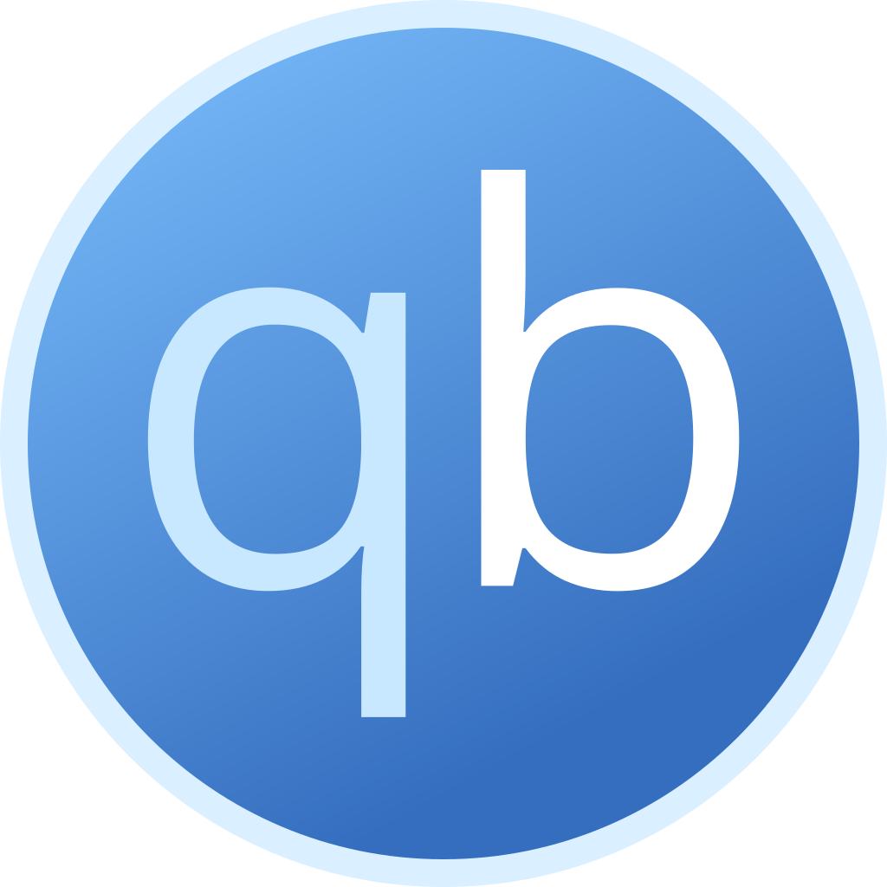
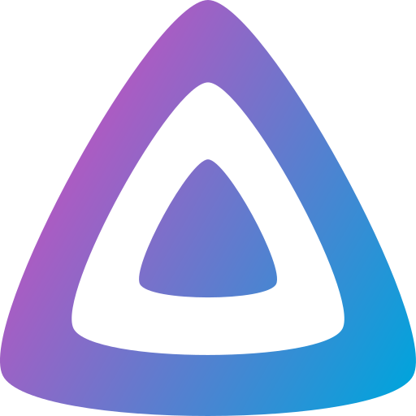
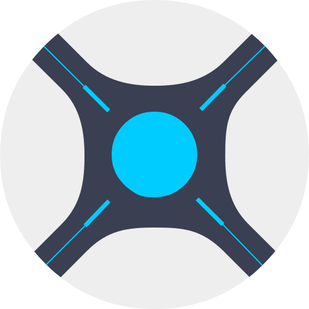
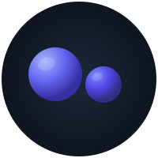
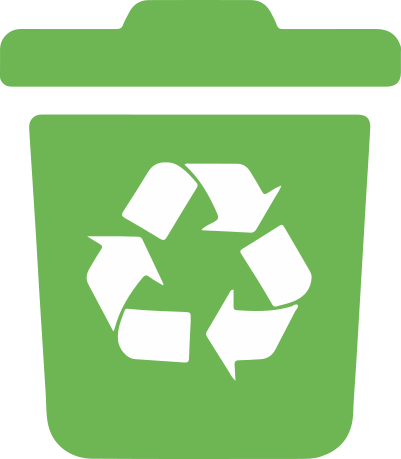

Install¶
Get AIO running in three steps: create folders, start the app, open the dashboard.
Prefer a short path?
Most people start with Docker or their NAS guide (Unraid · Synology · TrueNAS), then come back here for ports and updates.
Before you start¶
- Pick where it will run — Unraid, Synology, TrueNAS, plain Docker, or native Linux.
- Plan two kinds of storage:
- Config — settings and databases (small, back this up)
- Downloads + media — the big files (keep these on the same disk/share so hardlinks work)
- Know your user ID — on Linux/NAS, apps often run as a specific user (
PUID/PGID). Match that to who owns your folders so you do not get permission errors.
You only need one AIO container. Do not install Sonarr, Radarr, or download clients as separate apps alongside it.
Image: ghcr.io/qballjos/aio-media-server-manager:latest
Architectures: linux/amd64, linux/arm64 (Flaresolverr is x86_64-only and hidden on ARM)
Choose your platform¶
| Where you run it | Guide |
|---|---|
| Docker (any host) | Docker |
| Unraid | Unraid |
| Synology | Synology |
| TrueNAS SCALE | TrueNAS |
| Debian / Ubuntu / Proxmox LXC (no Docker) | Linux |
| All options listed | Deploy overview |
Each platform guide starts with: open SSH → create folders → start AIO.
Folders on the host¶
SSH in, then create something like this (paths vary by platform — follow your guide):
ssh user@host
mkdir -p "$HOME/aio-media-manager/downloads" "$HOME/aio-media-manager/media"
sudo mkdir -p /path/to/config /path/to/config/vpn /path/to/backups
id # note uid= (PUID) and gid= (PGID)
sudo chown -R "$PUID:$PGID" "$HOME/aio-media-manager" /path/to/config /path/to/backups
Keep downloads and media as siblings under one folder so Arr can hardlink. Mount a separate backups* folder at /backups if you can (ideally another disk than config).
Inside those mounts AIO lays out libraries such as media/tv, media/movies, and downloads/complete.
After it starts¶
- Open the dashboard:
http://YOUR-SERVER-IP:8080
(Use a different port if you mapped one.) - Create the admin account (username, email, password).
- Follow Using the dashboard to enable apps and open each web UI.
After docker compose pull, recreate the container (not only restart) so new ports and runtimes apply.
Optional: reach apps from outside your home¶
- Cloudflare Tunnel — HTTPS without opening router ports
- Cloudflare Access — login gate so strangers cannot open admin apps
Ports¶
The manager UI uses 8080. Child apps listen inside the same container. Compose and NAS templates publish those ports on the host so Open UI works (http://YOUR-IP:8989 for Sonarr, and so on). Host networking is an alternative if you prefer not to map each port.
| Application | Default port |
|---|---|
| 8080 | |
 qBittorrent |
8081 |
| Shelfmark | 8084 |
| SABnzbd | 8085 |
 Jellyfin |
8096 |
| Flaresolverr | 8191 (x86_64 only) |
| Bazarr | 6767 |
| NZBGet | 6789 |
| 8686 | |
 Sonarr |
8989 |
| Radarr | 7878 |
| 9696 | |
| Seerr | 5055 |
| Grimmory | 6060 |
 NeutArr |
9705 |
 Recyclarr |
none (CLI only) |
| Plex | 32400 |
Common environment variables¶
Copy .env.example for native installs. Many of these can also be set later in Settings.
| Variable | Purpose |
|---|---|
PUID / PGID |
User the apps run as (match folder ownership) |
TZ / AMM_TIMEZONE |
Timezone for logs and schedules |
AMM_DOWNLOAD_DIR / AMM_MEDIA_DIR |
Paths inside the container (change host mounts in compose) |
GITHUB_TOKEN |
Optional; higher GitHub API limits for updates |
AMM_CLOUDFLARE_TUNNEL_* |
Optional remote tunnel |
AMM_VPN_* |
Optional VPN for torrent-related apps |
If something goes wrong¶
- Cannot open the UI — container running? Correct host port?
- Permission denied — folder ownership must match
PUID/PGID. - Child Open UI fails on LAN — publish that app’s port (table above) or use host networking; old compose files that only mapped
8080need updating. - Apps duplicated — remove separate Sonarr/Radarr containers; only AIO should run them.
Developers¶
To hack on the code, run the checkout in Docker (Linux binaries). See Contributing and ./scripts/test-env.sh up.